单一列被 seam 反复经过的最大次数明显降低。
seam 在图像宽度方向上的分布范围显著扩大。
从 BSDS500 中选取人物、动物、建筑和自然场景。
01 · OVERVIEW
为什么需要内容感知拉伸？
普通非等比缩放会均匀改变所有像素的位置，容易导致人脸、身体、建筑等重要结构被压扁或拉长。 Seam Carving 根据图像能量选择低重要度路径，对图像尺寸进行内容感知调整。
传统拉伸的局限
统一缩放无法区分主体与背景，重要目标和低纹理区域会被同时拉伸，导致明显几何畸变。
原始 Seam Carving 的问题
连续插入 seam 时，算法可能反复选择少数低能量列，形成局部过度拉伸、条纹伪影和结构破坏。
本项目的目标
让新增像素更均匀地分布在多个低重要度区域，同时显式保护人物、建筑等关键内容。
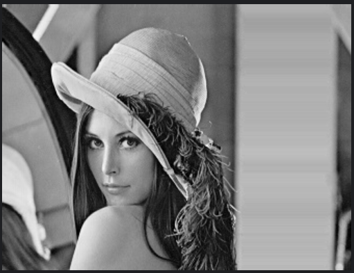
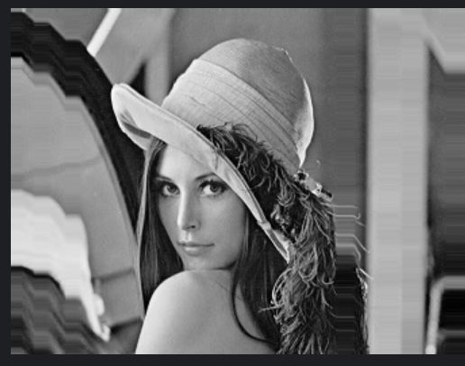
02 · METHOD
算法流程与四项改进
基础流程由 Sobel 能量计算、动态规划寻找最小能量 seam、路径插入组成；在此基础上，通过四个模块提升扩展质量。
01输入图像读取图像与目标扩展宽度
→
02能量图计算使用 Sobel 梯度衡量像素重要性
→
03ROI 能量加权提高重要区域被选中的代价
→
04Seam 搜索动态规划寻找低能量路径
→
05平滑与惩罚平滑路径并抑制列集中
→
06多带插入在多个低能量区域分散扩展
ROI 区域保护
对人物面部、衣物、建筑等重要区域施加更高能量，使 seam 更难穿过关键内容。
E'(x,y) = E(x,y) + λ · MROI(x,y)
Seam 路径平滑
通过平滑窗口约束路径变化，减轻像素插入后出现的不连续、突兀边缘和锯齿感。
s' = Smooth(s, window)
列惩罚机制
每次插入后提高已频繁经过列的代价，避免 seam 长期聚集于同一位置。
E'' = E' + α · Pcolumn
多带扩展
在多个低能量区域之间分散选择 seam，使大幅横向扩展时的新增像素分布更加均匀。
B = {s₁, s₂, …, sk}
03 · EXPERIMENTS
实验设置、原始图表与完整数据
对 25 张 mini-BSDS500 图像统一进行水平扩展，宽度增加 80 像素；对比普通非等比线性拉伸、原始 Seam Carving 和本文改进方法。
人物、动物、建筑、自然场景
统一参数条件
高度保持不变
集中程度 / 分布跨度
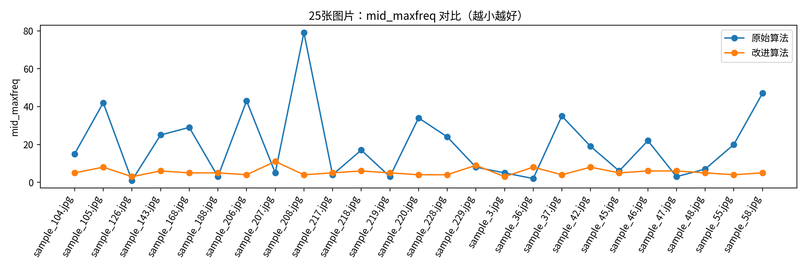
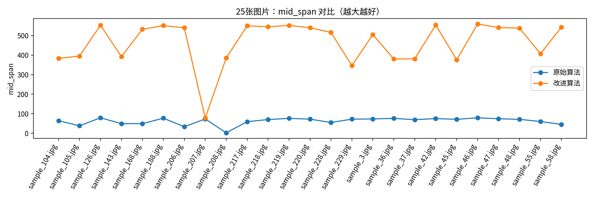
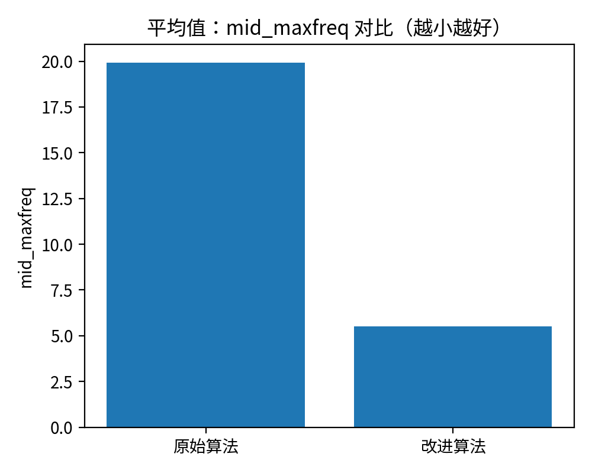
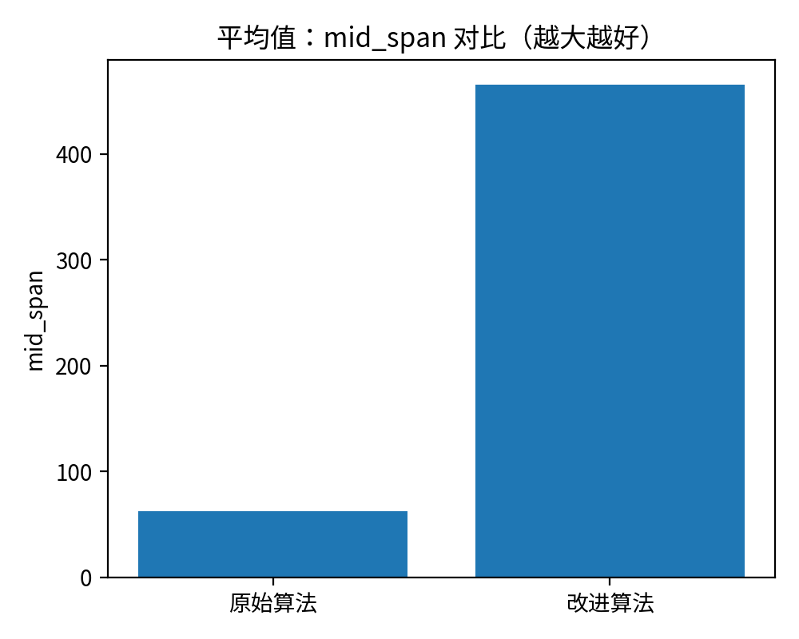
| 方法 | mid_maxfreq ↓ | mid_span ↑ |
|---|---|---|
| 原始 Seam Carving | 19.92 | 62.44 |
| 本文改进方法 | 5.52 | 465.68 |
查看论文表 4-1：25 张测试图像的完整统计数据
| 图片文件名 | mid_maxfreq ↓ | mid_span ↑ | ||
|---|---|---|---|---|
| 原始算法 | 改进算法 | 原始算法 | 改进算法 | |
| sample_104.jpg | 15 | 5 | 64 | 383 |
| sample_105.jpg | 42 | 8 | 38 | 395 |
| sample_126.jpg | 1 | 3 | 79 | 553 |
| sample_143.jpg | 25 | 6 | 49 | 392 |
| sample_168.jpg | 29 | 5 | 49 | 532 |
| sample_188.jpg | 3 | 5 | 77 | 551 |
| sample_206.jpg | 43 | 4 | 33 | 540 |
| sample_207.jpg | 5 | 11 | 73 | 78 |
| sample_208.jpg | 79 | 4 | 2 | 385 |
| sample_217.jpg | 4 | 5 | 59 | 550 |
| sample_218.jpg | 17 | 6 | 70 | 545 |
| sample_219.jpg | 3 | 5 | 76 | 552 |
| sample_220.jpg | 34 | 4 | 72 | 540 |
| sample_228.jpg | 24 | 4 | 55 | 516 |
| sample_229.jpg | 8 | 9 | 72 | 346 |
| sample_3.jpg | 5 | 3 | 73 | 505 |
| sample_36.jpg | 2 | 8 | 76 | 380 |
| sample_37.jpg | 35 | 4 | 69 | 381 |
| sample_42.jpg | 19 | 8 | 75 | 554 |
| sample_45.jpg | 6 | 5 | 71 | 376 |
| sample_46.jpg | 22 | 6 | 79 | 559 |
| sample_47.jpg | 3 | 6 | 74 | 541 |
| sample_48.jpg | 7 | 5 | 71 | 538 |
| sample_55.jpg | 20 | 4 | 60 | 407 |
| sample_58.jpg | 47 | 5 | 45 | 543 |
| 平均值 | 19.92 | 5.52 | 62.44 | 465.68 |
04 · ORIGINAL FIGURES
论文原始定性对比图
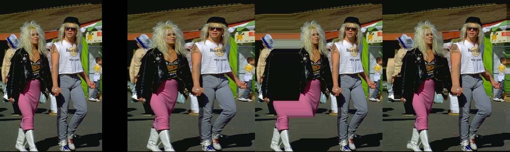
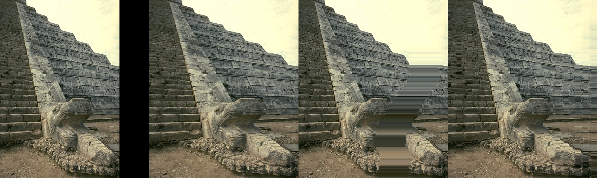
ROI PROTECTION
ROI 区域保护效果
说明：未显式开启 ROI 时，人物面部仍可能出现条纹；开启 ROI 后，重要人像得到保护，但扩展纹理会更多集中到非保护区域。
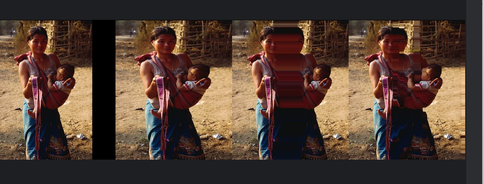
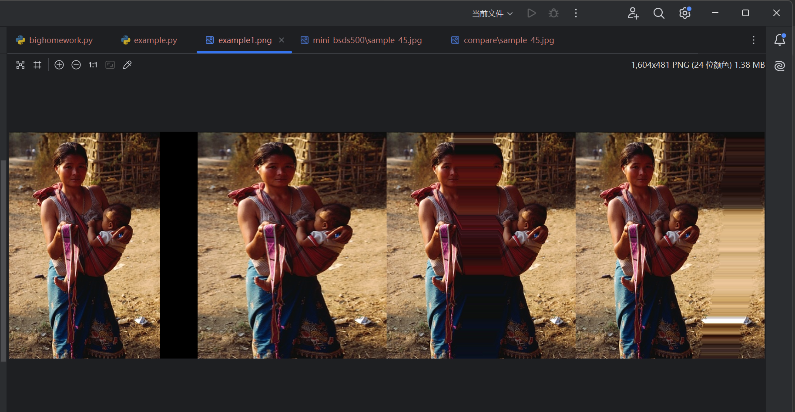
ABLATION STUDY
消融实验
以 sample_45 为例，逐步引入 ROI 能量保护、seam 平滑、列惩罚和多带扩展，观察各模块对结构保持与条纹抑制的贡献。
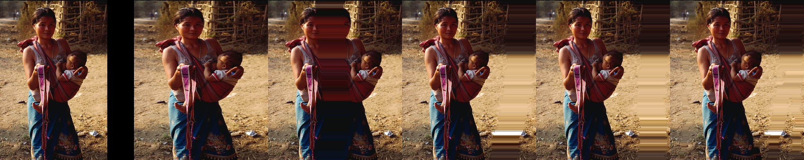
05 · ROADMAP
总结与未来工作
实验表明，能量加权与路径分布约束能够有效缓解多次 seam 插入产生的局部过度拉伸，并改善重要内容的结构保持效果。
视频内容保持拉伸
引入时序一致性约束，避免视频帧间出现 seam 跳变和闪烁。
自动 ROI 生成
结合目标检测或语义分割模型，自动识别人脸、人物和关键建筑区域。
多方向与多尺度扩展
从横向扩展推广到纵向、多方向及更复杂比例的图像尺寸调整。
GPU 与实时优化
通过并行计算、近似搜索和 GPU 加速降低高分辨率图像的处理开销。